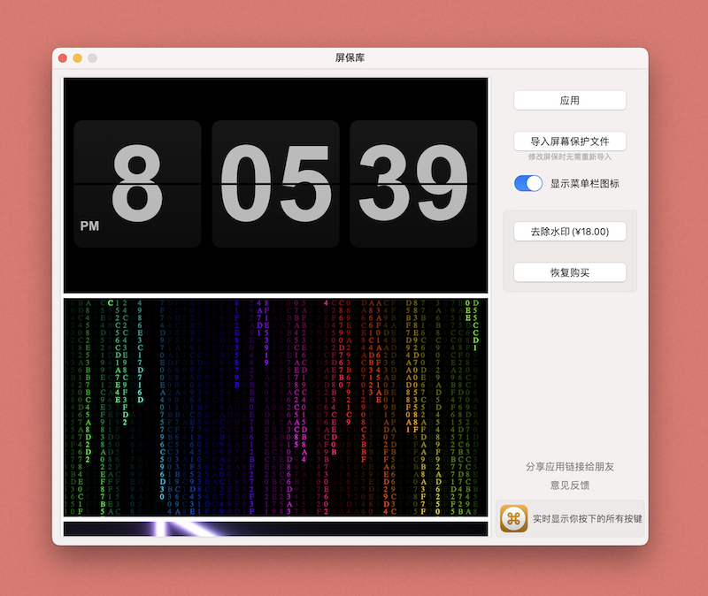
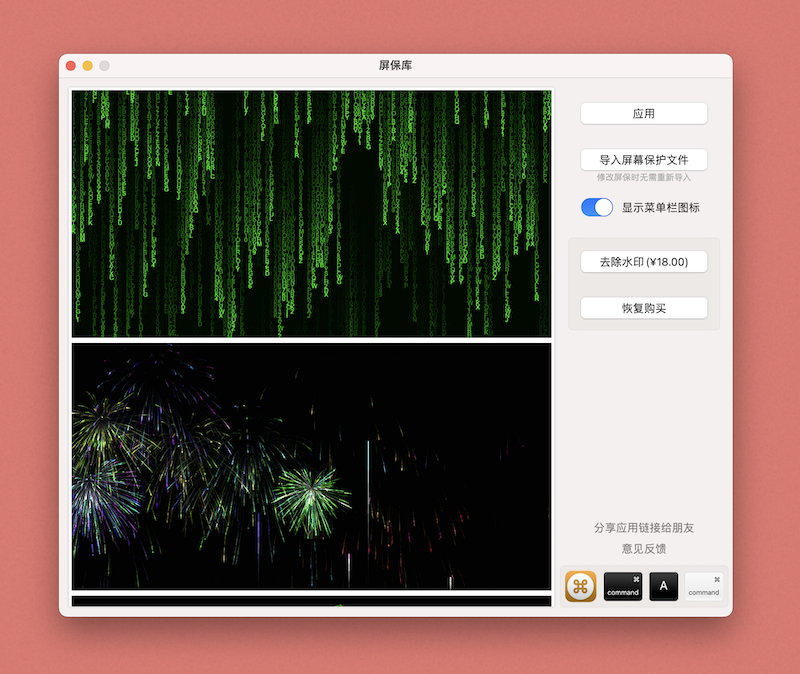

屏保库

功能介绍
显示在Dock程序坞上的时钟
 
这是一款可以显示在Dock程序坞上的时钟
它拥有极低的CPU使用率
我们提供了很多很多的显示样式，有经典闹钟、卡通图案、星球、运动球类等等...
另外还特别制作了树屋样式、南瓜灯、可爱的猫咪和爱心表盘样式，总有一个你会喜欢
更多表盘样式持续上线中...
如果您实在找不到喜欢的样式...我们提供自定义样式的功能
你可以把自己家人照片，或自己喜欢的图案作为表盘，放到Dock上显示
时钟的指针还支持机械走针和石英钟走针两种方式，任你挑选
如果你那里正处于夏令时，没问题的
以下为大家提供几个表盘背景(右键可保存原始尺寸)